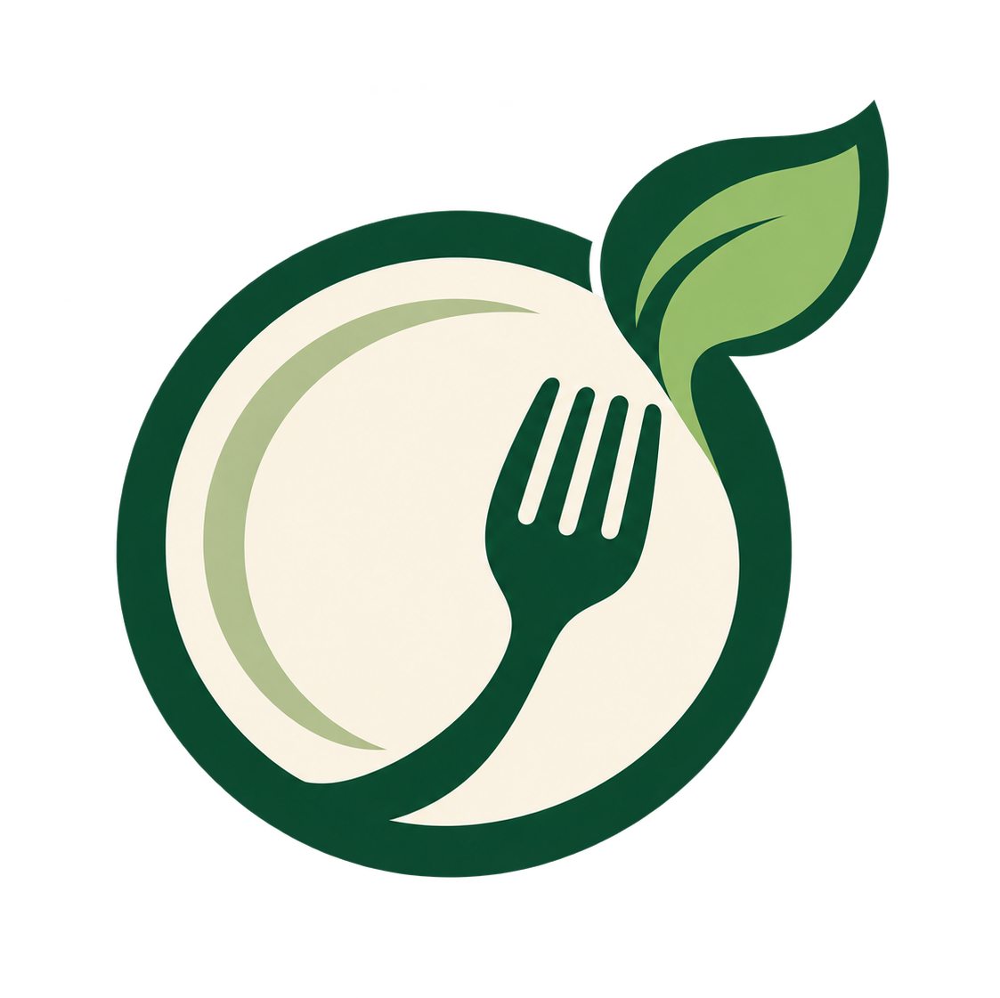

BILANS DNIA
Twoje kalorie
—kcal pozostało
Spożyto0 kcal
Dzienny cel— kcal
Bilans do celu—
Uzupełnij parametry profilu, aby obliczyć cel.
TWOJA PRZESTRZEŃ
Zaloguj się, aby bezpiecznie przechowywać swoje dzienniki, produkty i dania na koncie.
Sesja pozostaje zapamiętana na tym urządzeniu. Hasło obsługuje zewnętrzna usługa logowania — aplikacja go nie zapisuje.

Dziennik ŻywieniowyTwoje codzienne wybory, w jednym miejscuTWÓJ CODZIENNY PANEL
Najważniejsze informacje i szybkie dodawanie posiłków.
BILANS DNIA
Uzupełnij parametry profilu, aby obliczyć cel.
DZIENNIK POSIŁKÓW
Wybierz, co dodajesz do dnia z daty u góry: pojedynczy produkt, danie z bazy „Dania” albo cały dzień z własnego planu. To jedyne miejsce, w którym trafiają one do dziennika.
Wpisz minimum 2 znaki. Wybór źródła FatSecret nie uruchamia zapytań Open Food Facts.
TWOJE SPOŻYCIE
DOBRY NAWYK
TWOJE DANE
Obserwuj zmiany i aktualizuj parametry profilu.
OSTATNIE 7 DNI
Dzienna suma z zapisanych posiłków
USTAWIENIA PROFILU
Wiek, wzrost, masa ciała i aktywność pozwolą oszacować zapotrzebowanie energetyczne.
POSTĘPY
Regularne pomiary pomagają obserwować trend.
TWOJE WSKAŹNIKI
Szacunki aktualne dla wybranego profilu.
REE — spoczynkowy wydatek energetyczny. TDEE — REE + aktywność (PAL = poziom aktywności fizycznej). BMI — wskaźnik orientacyjny, nie ocenia składu ciała.